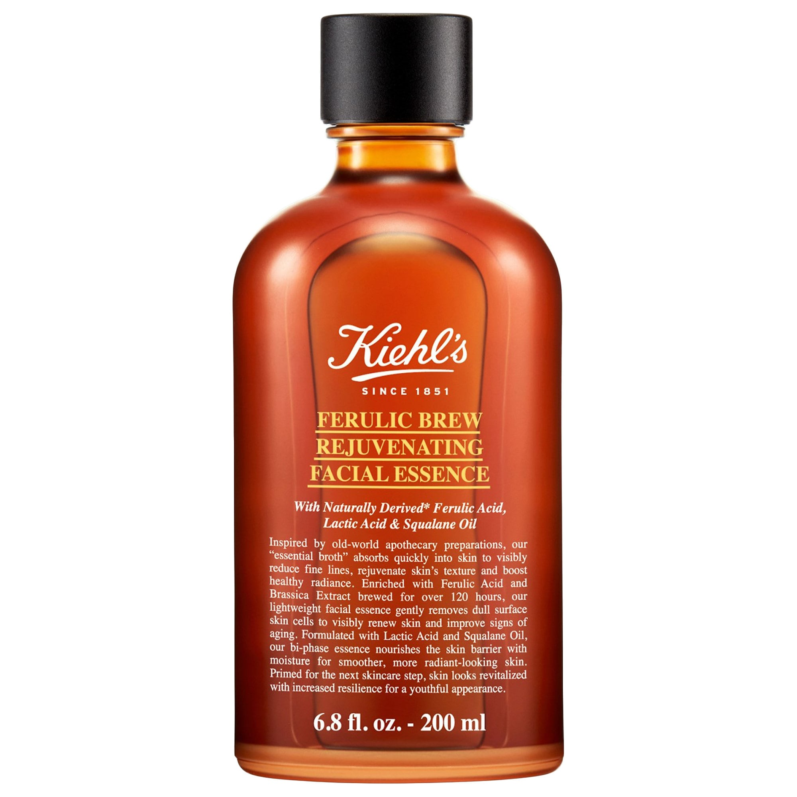

Toner
[Kiehl's] Ferulic Brew Facial Treatment Essence with Lactic Acid

What it is: An antioxidant-rich facial essence brewed with ferulic and lactic acids for visibly glowing skin.
In just seven days, skin looks smooth and even with less-visible fine lines.
Skin Type: Normal, Dry, Combination, and Oily
Skincare Concerns: Fine Lines and Wrinkles, Dullness, and Uneven Texture
How To Use
After cleansing and before opening, shake the bottle five times to mix the formula inside.
Pour five generous drops into the palm of your hand.
Gently press onto skin five times, focusing on your cheeks, forehead, and chin.
Follow with serum and/or moisturizer.
Can be used morning and night.
Highlighted Ingredients:
- Ferulic Acid: Defends against free radicals to prevent visible signs of aging and dullness.
- Lactic Acid (AHA): Refines the look of tone and texture for visibly smoother, more even, glowing skin.
- Squalane: Hydrates and supports skin’s moisture barrier.
- 1.toner
- 2.serum
- 3.moisturizer
- dkfjlds
- ksfjdlkjf
- sdkfjldskfj